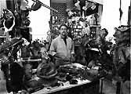
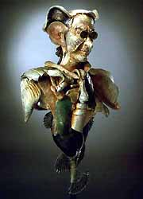
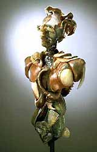
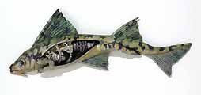
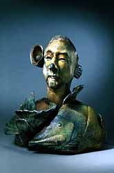
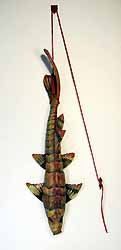

|
Bill Abright
American ceramist

American
ceramist Bill
Abright studied under Bruce Duke at San Joaquin Delta College,
receiving an AA in 1970 and at San Francisco State University, earning
a BA in 1973 and an MA in 1974. He has taught at the College of
Marin in Kentfield, California since 1975 and has been the Chairman
of Fine and Visual Arts since 1997. He was awarded the Hayward Award
for Excellence in Education by the College of Marin Academic Senate
in 1996.
Left: Bill Abright in the Studio. Photo by Charles Kennard
|  |
 |
All Apart of Me, Soda-fired constructed ceramic w/steel
base, 2001.
18 in w. x 63 in h. x 12 in d. |
The Nose I¹d Choose to Lose, Soda fired constructed
ceramic w/ steel base, 2001.
16 in w. x 63 in h. x 10 in d. |
Abright’s sculptures are constructed post-firing by combining
related elements with adhesives into a cohesive whole, and are finished
with a variety of media, including glaze, steel, paint and pencil.

Rotation, ceramics with mixed media
and cold finish, 2002. W. 40 in.
Inspired by Paleobiology, his work focuses on animal forms, fish,
insects and the human figure, often morphing species or combining
elements from different biological sources.. He has been a member
of NCECA since 1978.
|

Above: Mariner, Soda-fired ceramic w cold finish, 2001. 14
in w. x 15 in h. x 9 in d. |
Artists Statement
Art should represent the leap as well as the landing of an
idea. My best work doesn’t know its end in the beginning.
The urge to create has always been a part of me and the ability
of clay to record impressions and accept a variety of input
resonates with my fingertips. The process of firing this once
soft mass to permanence draws me to it like a moth to a primal
flame. After working in clay for 34 years I like the feel
of it more than ever.
As an art student I thought I would be a painter, but after
two years of exploring mediums at Delta College I started
focusing on ceramics. I finished my education at San Francisco
State in the early 70’s working on large nature inspired
vessel forms. Now I merge mediums as needed to complete my
work with clay, glaze, steel, paint and pencil. I have pioneered
the technique of post-fired constructed ceramic sculpture
by combining related elements with adhesives into a cohesive
whole.
Inspired by the complexity of the natural world, acute observations
of species are often my starting points. Paleobiology is fascinating
to me and I take extinction very seriously. My most recent
series of sculptures has focused on fish, insects and human
figures. I merge the morphology of nature into my figurative
work to communicate parallels with man’s existence,
and I insert human contradictions among animal species to
emphasize a link between their fate and ours.
|
My
process is one of exploring my own imagination. I will initiate
a form with deliberate intent; however, it is always the unexpected
discovery that I hope will occur. Clay surfaces are my canvases
yet my forms contain space and I open them up and use their interiors
to add complexity and depth. I am ever curious about what’s
inside and what makes things work. This investigation into the interior
of my figures parallels my own search for a better understanding
of myself.
Creative realization often occurs when I’m not looking for
it as I seek balance in the activities of my life. I have made a
living teaching and making art. Having a family has expanded my
heart and deepened my empathy for mankind. Being active outdoors
has given me some profoundly beautiful experiences with nature.
I am lucky to have had moments of “Oneness.” I continue
to live and work in search of these moments.
Left: Bloodline, ceramics with cold finish and mixed media,
2003. H. 60 in.
Images & statement courtesy
Bill Abright. © The Artist
More Featured Artists
More Articles |
{kind=link}
{kind=link}
{kind=link}
{kind=link}
{kind=link}
{kind=link}